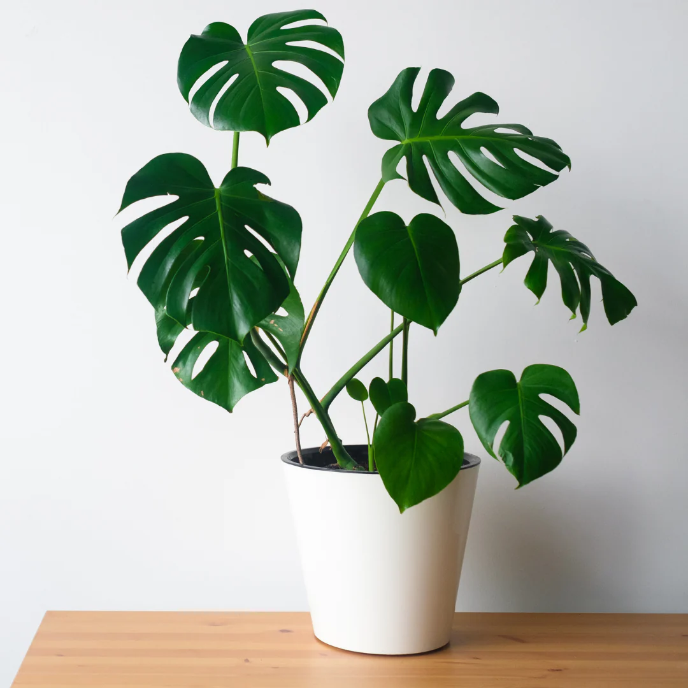
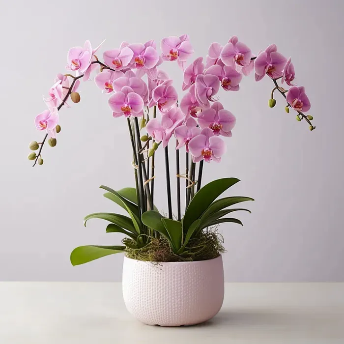
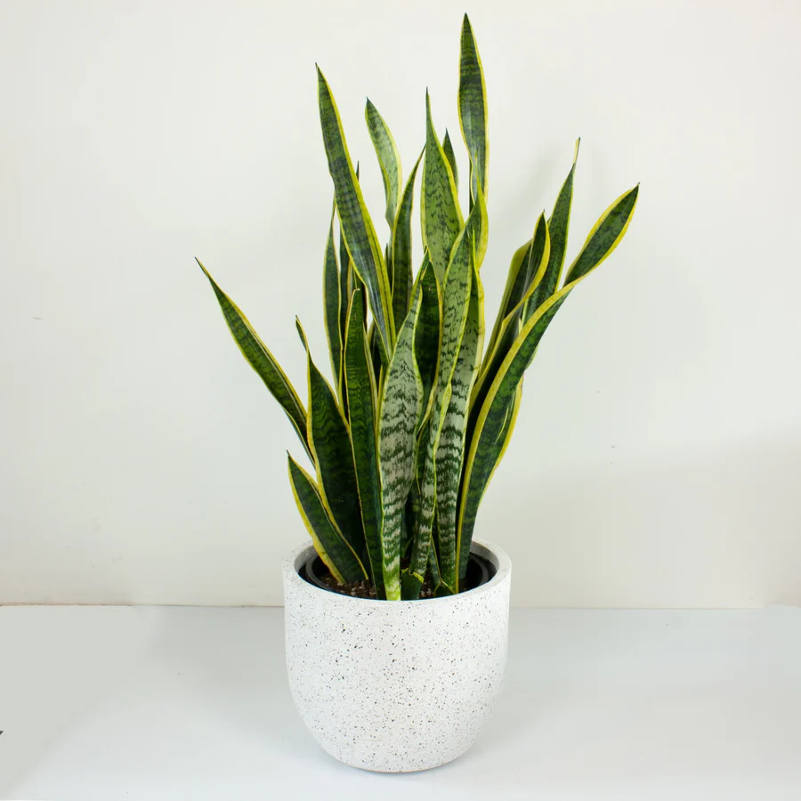

Monstera deliciosa, also known as the split-leaf philodendron or Swiss cheese plant, is a tropical plant often kept as a houseplant. This easy-to-grow climbing evergreen provides a dramatic focal point due to its size and unique shape. Monstera deliciosa has glossy, heart-shaped split leaves and is relatively easy to care for. It is a fast grower, about 1 to 2 feet a year, and takes about three years to reach full-grown maturity.
Learn more about the Monstera Deliciosa plantMonstera Deliciosa

Orchids

Orchids are beautiful indoor plants. They make wonderful plants for decorating the home. The flowers are colorful, unique, and long-lasting. They have a reputation of being difficult to grow indoors, but by selecting certain species and providing the proper environmental conditions, success is almost guaranteed.
Learn more about Orchid plantSnake Plant

Snake plants are one of the most popular houseplants, for good reason. It's incredibly drought-tolerant, able to go weeks without water in low and medium lighting conditions. They tolerate low light (hence why they're so often seen in office buildings) but will thrive in bright light, sending up new leaves and stronger variegation.
Learn more about the Snake PlantFiddle Leaf Fig

Fiddle leaf fig (Ficus lyrata) sometimes gets a finicky reputation. It's not the easiest houseplant to grow, but its lovely large leaves and tree form make it worth a little effort and a good choice even for the beginning gardener. These small trees are well adapted to indoor temperatures and filtered light and are hardy enough to survive less-than-ideal conditions.
Learn more about the Fiddle Leaf Fig plant